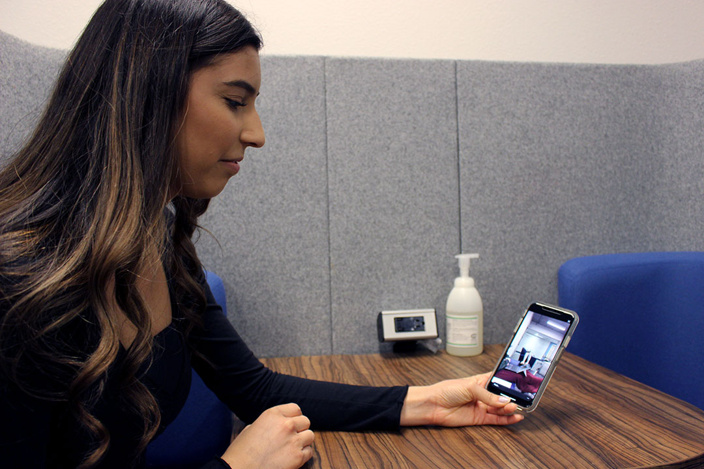
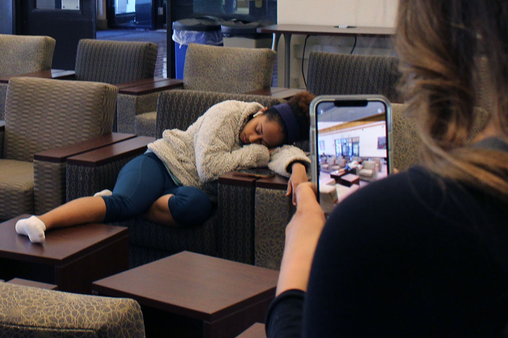
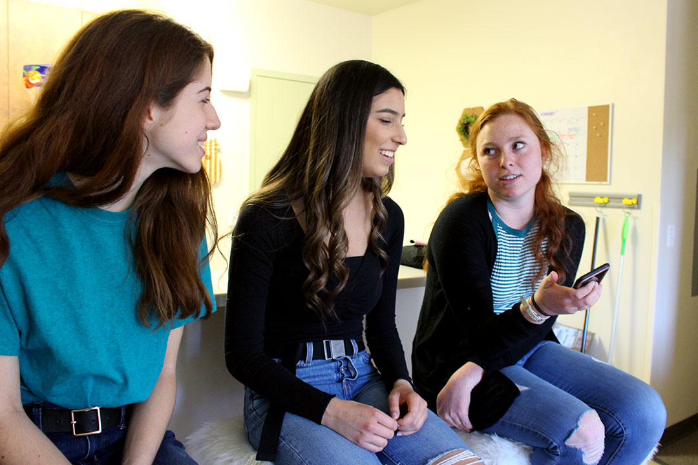
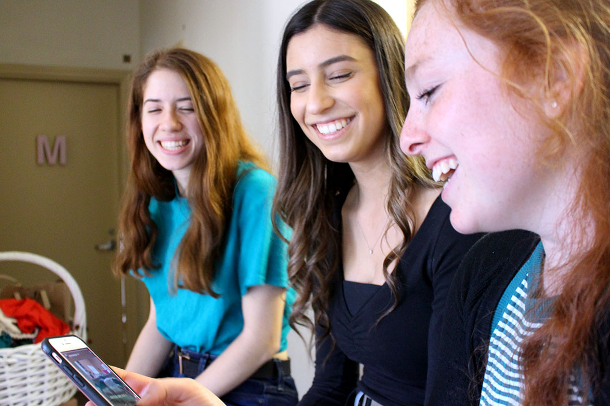
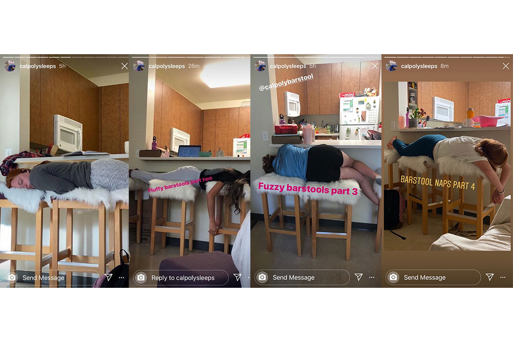
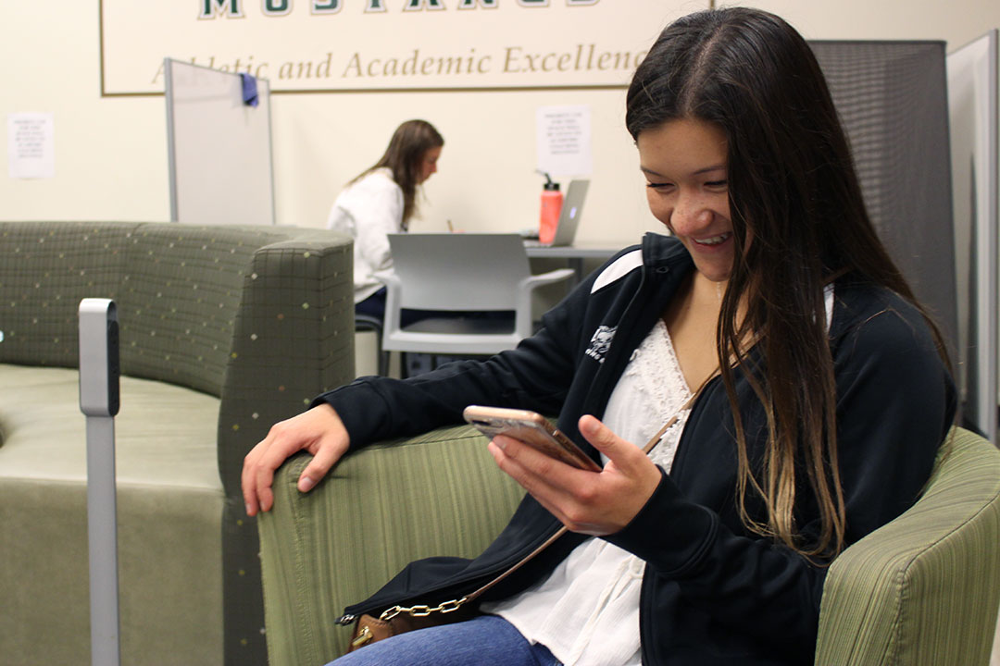
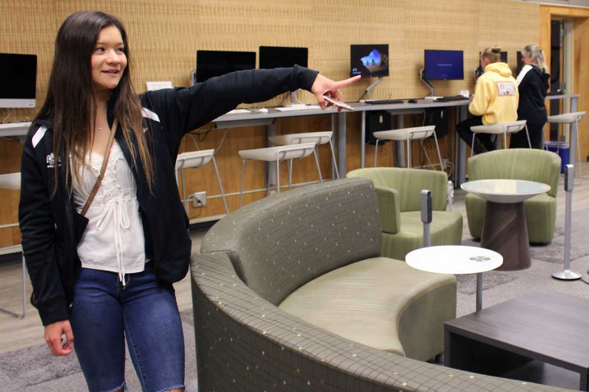
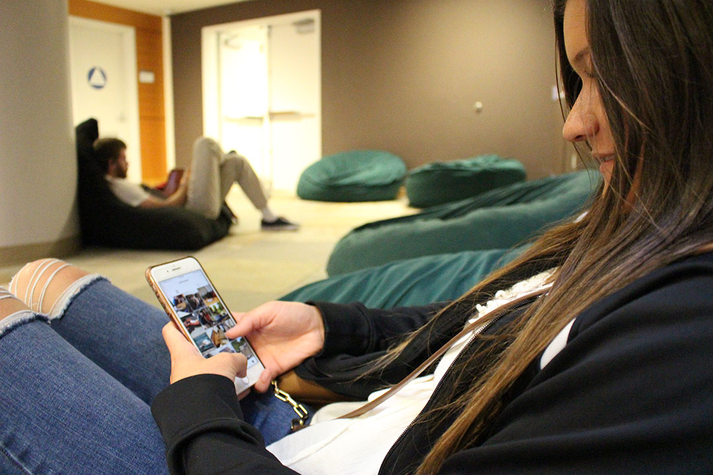
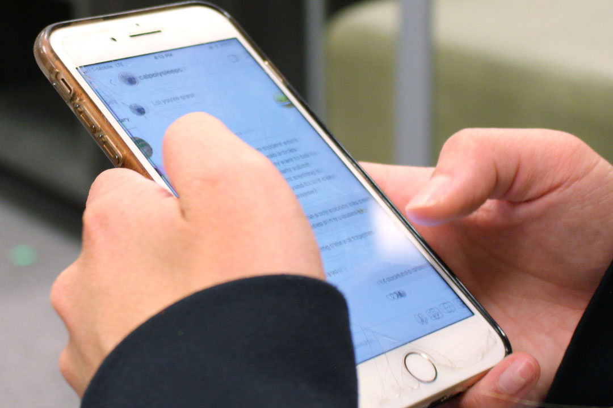

1 / 12
SAN LUIS OBISPO- February 7th, 2020: In order to get new content to post on the Calpolysleeps Instagram account, the anonymous account holder scrolls through their direct messages, a common practice the current holder has done daily for two years. No longer posting original pictures like the owner of the account, created in 2013, the current owner depends on its 8,300 followers for its sleepy content.
2 / 12

After getting her first picture shared on Calpolysleeps story during last year’s Week of Welcome, Makayla Diaz, a second year Liberal Studies Major, has kept trying to get more pictures posted by sending over 50 pictures of others sleeping. Tšɨłkukunɨtš Dorms- 2/7/2020
3 / 12

Makayla finds a stranger sprawled out taking a break from their homework in the University Union while checking her favorite sites to catch people napping. Holding her laughter in, Makayla silently takes the picture and sneaks away hoping she has caught a picture that will be posted on to the main account. University Union- 2/7/2020
4 / 12
In order to stay away from sending many pictures of strangers sleeping, which she admits feeling awkward about, Makayla has made a game of directly messaging pictures with her roommates, who are all also on board. Poly Canyon Apartments- 2/7/2020
5 / 12

Left to right, Heather Bootzin, a second year Psychology major, Makayla, and Maddie Slous, a second year Liberal Studies major, share an digital picture album they add to when they catch each other napping in awkward positions around their Poly Canyon apartment. Poly Canyon Apartments- 2/7/2020
6 / 12

Though all of them get shared onto the account story, Maddie feels like she is a good sport for being the one with the most appearances on the account, by being shared seven times on the story and appears on two of the official posts. Poly Canyon Apartments- 2/7/2020
7 / 12

Maddie is known for being the original sleeper in what is now the roommates’ legacy, the “Fuzzy Barstool” series.
8 / 12
Makala has also been shared on the account story a few times but claims to have been the most embarrassing picture after being posted when sleeping in the front row of a Statistics lecture. Tšɨłkukunɨtš Dorms- 2/7/2020
9 / 12

As a team member on the diving team, Kelsey Titterington finds it funny to take pictures of other tired athletes and friends she has caught sleeping during her first year as a Business major. Mott Gymnasium- 2/7/2020
10 / 12

After long and tiring practices, Kelsey shares that if it weren't for the comfortable lounges in the Mott gymnasium, her only posts would be of unsuspecting nappers in her classes. Mott Gymnasium- 2/7/2020
11 / 12

Kelsey has currently gotten all of her sent pictures posted on to the Calpolysleeps story, a feat she blames on athletes being tasked with “homework and practices make them knock out where ever.” Recreation Center- 2/7/2020
12 / 12

Even though she shares pictures of others sleeping, Kelsey checks in with the account holder that if she were ever posted on the account, that she would be able to ask them to remove the picture because she doesn’t want her friends to ever catch her napping. Mott Gymnasium- 2/7/2020
❮
❯